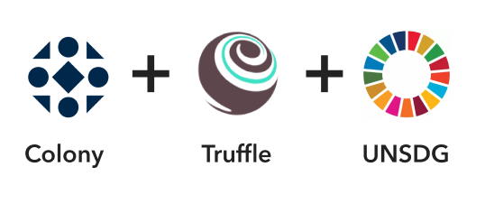
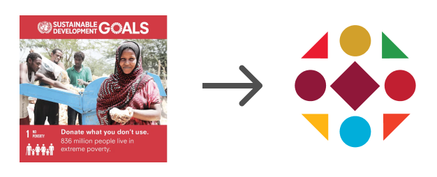

ETH Denver 2019 - Impact Track
Created by David Houston and Pat Harrington
Github
Goal:
Empower devs to be web3 coders and humanitarians

What We Did?
We created a developer starter that shows how to use Colony to govern the work needed to start tackling the UN Sustainable Development Goals (UNSDG).
Why Colony?
Decentralized prototcal for incentivizing, organizing, and governing work.
Why Truffle?
Makes it easy for developers to get started.

Demo Time
Summary
Goal:
Empower devs to be web3 coders and humanitarians
Outcome:
- Created a Starter utilizing the UNSDG Goals
- Used Colony to Organize, Incentivize, and Decentralize Work
- Initiated TruffleBox for Developers to Get Started